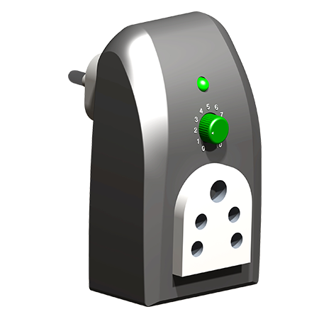

Ante Interdum Raclette
We designed a customized type mini-lift for a hospital to elevate files and medicines to other floors. The main advantage of our research and development team is we can develop projects in a budgeted manner to fulfill the requirement of the customers without compromising the quality and stability of the technology.
Ante Interdum Raclette
Overcharging can harm an Electronics battery and drastically shorten its lifespan. We designed a USB port wall charger with a timer is the safe solution for charging expensive Electronics and cell phones. Featuring five-timer modes, users can continuously charge over an Extended-time period (manual) or charge for a short period
